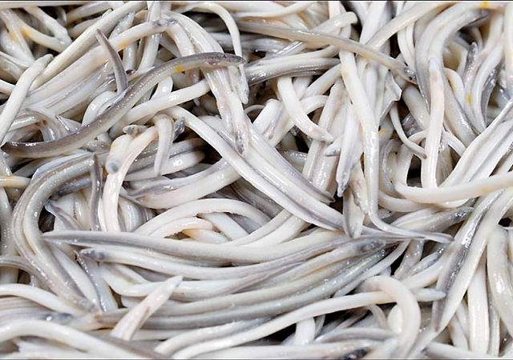

Angula
Angula es el nombre que recibe el alevín de la anguila, único alevín permitido por las leyes de pesca. Cuando se encuentra en los mercados de pescado suele tener 1 g de peso y mide algo menos de 8 cm de longitud. Las angulas comercializadas suelen estar cocidas, y en caso de estar vivas son transparentes.

Las angulas crias de amguilas, son uno de los alimentos mas caros de España, pero al verlas por primera vez quisa te preguntes por que?
En España era tradicional en las gastronomías de Cantabria, Vizcaya, Asturias, Tuy y Guipúzcoa pero su popularidad se ha extendido a otras partes del territorio. El plato más conocido es angulas a la bilbaína servido en una cazuela de barro con ajo, aceite de oliva y guindilla ahumada
Las angulas se suelen comprar ya precocinadas, generalmente envasadas al vacío, en este caso tienen un color blanco o ligeramente negro. Depende fundamentalmente del tiempo que han pasado en el río; las negras han pasado más tiempo y son generalmente menos valoradas.
Las angulas se suelen comprar ya precocinadas, generalmente envasadas al vacío, en este caso tienen un color blanco o ligeramente negro. Depende fundamentalmente del tiempo que han pasado en el río; las negras han pasado más tiempo y son generalmente menos valoradas.